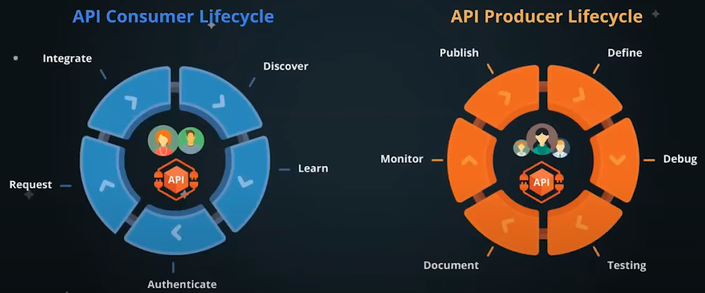
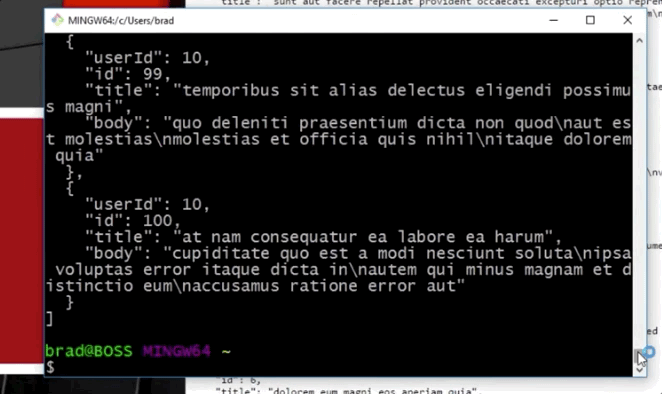
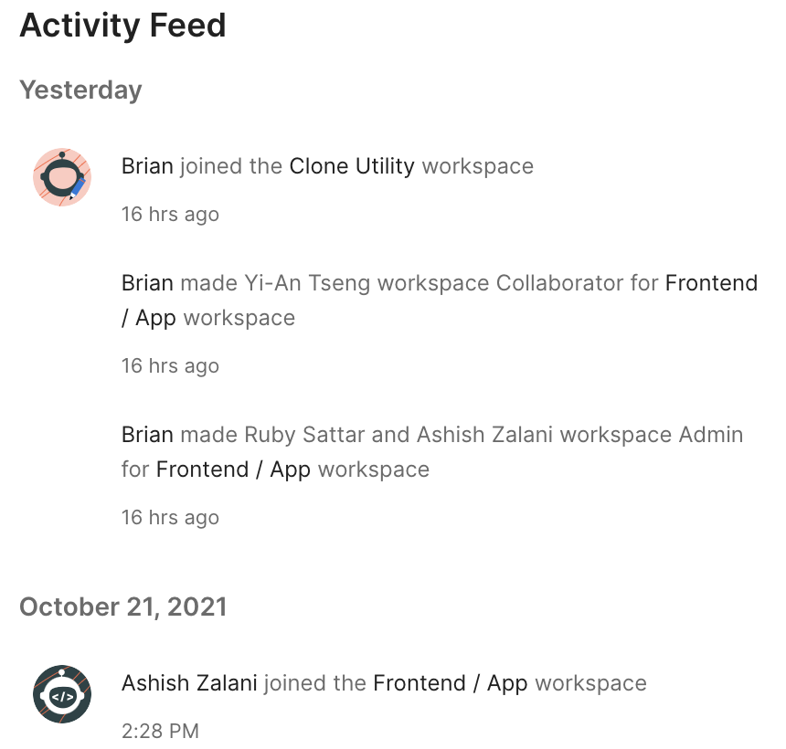

Welcome to Postman's Cosmic Courses: Fundamentals!
You're likely exploring this course if you're new to Postman or the API space.
Select the right arrow on the bottom right of this slide to briefly review navigation tips for this presentation before we jump into content.
Please note that this presentation and its content is meant to provide brief overviews on the included topics. If you desire more information or detail, then please reach out to your Postman account team or participate in discussions at community.postman.com.
Navigation Tips
Use the left and right arrows on the bottom right of each slide to switch between different learning paths/stories.
Use the up and down arows on the bottom right of each slide to switch between different sections within a single learning path/story.
Keyboard arrow keys work just as well. The Esc key can be used to access a visual map of all the content available in this presentation.
Now, let's explore some stories that might drive your needs from this course.
Select a story to begin a learning path:
An introduction to APIs and Postman
The Postman API Platform delivers everything you need for the entire API lifecycle. With Postman, you can create better APIs—faster.
Select the  arrow on the bottom right of this slide to continue to the topics covered in this learning path.
arrow on the bottom right of this slide to continue to the topics covered in this learning path.
What is an API?
“API” stands for Application Programming Interface. APIs act as data liaisons, enabling software to communicate with other software. It's no wonder they've become the foundation of modern software development!

Sometimes trickier concepts are more easily understood through analogies, so let’s imagine a digital restaurant in which there are three characters.
A patron - the client, or application, at the restaurantA waiter - the API, or middle service, at the restaurantA chef - the server that assembles data, or ingredients, and intimately knows the data structures of the database
In this example, the API offered up a menu to the client from which the client could choose what to consume. Watch Claire Froelich expand more on this example in this video.
Note - Play video until the 3:40 (3 minutes and 40 seconds) timestamp for an expansion on this example or play the entire video, which runs for about 65 minutes, for a deeper dive into APIs.
API-First Development and the API Lifecycle
What does it mean to be API-First?
"An API-first approach assumes the design and development of an application programming interface (API) comes before the [code] implementation", as Joyce discusses in this article.
What is the API Lifecycle?
The lifecycle of an API can be considered from two perspectives: The Consumer and the Producer. For an API consumer, the lifecycle is every step taken by a user from discovering a new API to integrating that API into a workflow. For a producer, the lifecycle of an API is every step taken to develop an API from Designing and mocking all the way to publishing in a production environment.
Got about 3 minutes? For a deeper dive into API-first development and a look into the API lifecycle, check out the video on the next slide.
This graphic novel helps explain the benefits of being API-first. Check it out.
How does Postman interact with APIs?
Postman is a collaborative platform for building, using, and testing APIs. It uses HTTP, or hypertext transfer protocol, to transmit data in a request-response cycle.
More than 17 million people use Postman and for many teams, Postman is an everyday tool used to interact with APIs.
Find more information about sending requests here.
Other Tools and Postman's Differentiators
Another tool often used by developers to interact with APIs is cURL. cURL, which stands for client URL, is a command line tool that developers use to transfer data to and from a server. Sound familiar?
Not all developers can work easily with walls of text and many prefer the graphical user interface Postman offers.

Advantages of using Postman

You can find more information about the advantages of using Postman here.
Knowledge Check!
What are APIs and how does Postman use them?
When you feel you can answer the question above, spend about 8 minutes practicing making requests with Valentin Despa in this introductory video.
OR try your hand at our API 101 collection!
Click here to go back to the top of this learning path.
Debugging and testing an API
Postman can be used to write functional tests, integration tests, regression tests, and more. Testing your API's effectiveness is an integral part of ensuring you ship out high quality products.
Select the arrow on the bottom right of this slide to continue to the topics covered in this learning path.
Request-Response Cycle
Debugging an API involves understanding the anatomy of a request and response from an API.

Whenever we are transmitting data (whether information is coming FROM or going TO a database), we are interacting with an API in a request-response cycle.
Some things we would find in a request are a Method and an Endpoint with a Path.

A request can also include Parameters, Headers, and a Body.
When testing an API, it's especially important to understand the anatomy of a response from the API.
Developers pay close attention to status codes, headers, and response bodies that APIs return.

Tests
Postman allows users to either write their own tests or select a test from snippets. Tests can analyze response data in order to ensure the expected information was retrieved or sent.
There are pre-request and test scripts that can be developed. The order of operations for those scripts is pictured below.
For more practice testing APIs, check out Valentin Despa walk through the anatomy of a response and writing tests in this 15-minute video clip.
Please also check out 20 minutes of our Space Camp Webinar: An Introduction for Testers. Here, you'll gain more information about Unit, End-to-End, and Contract testing from Carson and Sean.
Knowledge Check!
What steps should you take in Postman to test an API?
When you feel you can answer the question above, feel free to explore any or all of the following:
- Debugging and Manual Testing mini course, which can be found on the bottom right of the application once you've entered any workspace.
- Galaxy Testing and Automation collection
- Day 06 of our 30 Days of Postman Challenge for Developers
Click here to go back to the top of this learning path.
Collaboration in Postman
Postman enables you to collaborate across your organization or across the world. The collaborative nature of Postman ensures that communication throughout API development never has to be a hurdle.
Select the arrow on the bottom right of this slide to continue to the topics covered in this learning path.
Workspaces
There are many different ways to collaborate within Postman. To begin, let's review some key concepts about workspaces.

Workspaces allow users to group related APIs, collections, environments, mocks, and monitors. There are four levels of visibility in workspaces.
- Public - These workspaces enable collaboration on elements with anyone across the world. More info in this video. (10 minutes)
- Team - These workspaces enable access to be shared and managed with a team. More info in this video. (11 minutes)
- Personal - These workspaces are visible only to you.
- Private - Business and Enterprise users can limit visibility of this workspace to invited members.
Roles in Postman
Postman's role-based access control system gives users the power to tailor visibility and workflows in a way that meets teams' needs.
Roles can be divided into 4 levels, each with varying degrees of access. Select a level below to get a closer look into their access details.
As an admin, you can manage roles by navigating to
Team > Manage Team > Manage Roles

More documentation can be found here.
A Note about Roles and Security
Community Manager is a Team role in Postman that can help address concerns about security. In this role, a user can view and manage everything that’s made public by their team. Spend 2 minutes reading about this role and governing public API collections in this blog post by Avinash.
Sharing to Workspaces
To share an API, collection, or environment, navigate to the left-most side of Postman to select the element you wish to share. Then, from the dropdown in the "..." menu, select Share __.
In the share modal, select the workspace you want to share the entity to. Team members in the target workspace will be able to access the entity when you share it there.

Other Ways to Share
In addition to sharing to workspaces, elements can be shared via embedding or public JSON link.

Be advised that anyone on the internet can see collection information when sharing with a public JSON link, not just those with collection access. This can be managed by Team Admins and Community Managers using the Public Link Management feature. You can find more information about this in our docs.
Commenting
Commenting allows teams to collaborate live while working on APIs in Postman. There are several ways to comment on various components within collections. Find more information about commenting in this documentation.

API Network

The API Network is a centralized repository of APIs, Collections, and Workspaces. You can use API networks to browse what others in the API community are building. There are public and private API networks.
The Public API Network allows users to fork others' collections and environments into their own workspaces. You can find it by visiting explore.postman.com
You can share the APIs that your team uses internally to the Private API Network. Your team can learn about and access these APIs and start using them right away.
Users must be granted access into private API networks.
Spend 7 minutes with Meenakshi as she explains the Private API Network
Version Control
There are a variety of utilities available within Postman to enable users to version control collections and APIs.
We can logically divide these utilities into three functions:
- Change-Management
- Change-Notification
- Change-Recording
Change-Management
Our change-management utilities allow users to fork, merge, see differences, and submit pull requests. Developer teams use these processes to work together on the same projects.

Check out Joyce walking through the previously mentioned steps in this 2-minute video.
Change-Notification
The watch option allows you to receive an email/in-app notification when one of your team member belonging to the same workspace modifies the collection. If you watch a collection, you will be notified of actions such as adding a new request, modifying the existing requests, adding or updating variables, editing pre-request scripts or tests, adding or deleting a folder and so on.
Find more information about change notifications here.
Change-Recording
Changes are recorded in the Postman changelog.

The changelog is located on the far right of the Postman application when a collection or API version is selected. The changelog for a workspace is known as History and can be found on the far left. You can find it by selecting the clock symbol. 
Another place to find changes recorded is the "Activity Feed" section of the workspace home page.
Knowledge Check!
Name one way a developer can collaborate within Postman and how that process affects productivity.
When you feel you can answer the question above, feel free to explore our Collaboration mini course, which can be found on the bottom right of the application once you've entered any workspace.
Got about 8 minutes and need a refresher or just prefer learning the material in this learning path differently? Watch Matt Ball talk about collaboration in Postman here.
Click here to go back to the top of this learning path.
You did it!
If you've progressed through each of the learning paths, congratulations! You've explored...
- APIs and Postman
- Ensuring APIs work as intended
- Collaborating in Postman